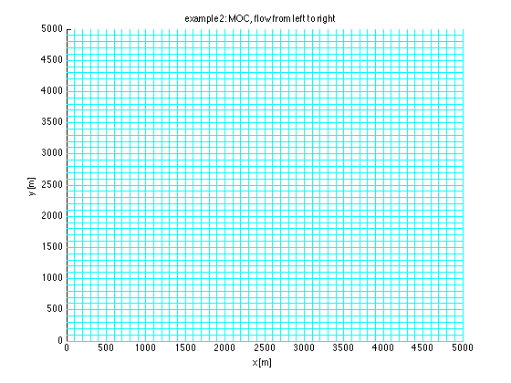
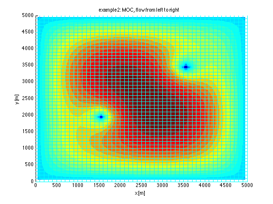
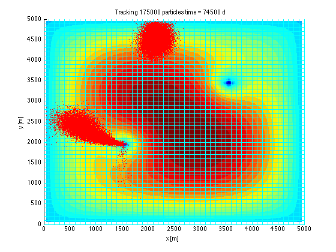
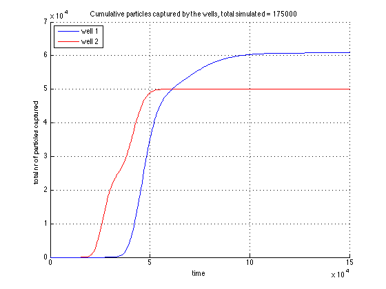
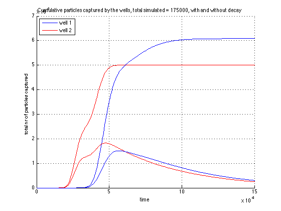
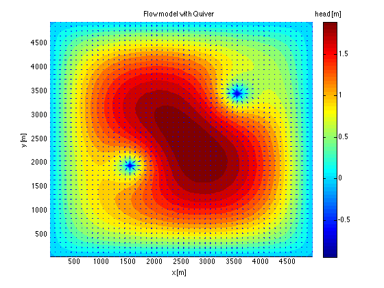

ModelScript -- Example 4 sets up 2D FDM, runs it and then runs
Runs a particle tracking model (Moc method of characteristics)
Shows the results
TO 140417
Contents
Cleanup
close all;
Constants used in IBOUND
FXHD = -1;
INACTIVE = 0;
ACTIVE = 1;
clr = 'brgkmcy';
Generate the Grid for th FDM flow modoel
xGr = 0:100:5000;
yGr = 0:100:5000;
zGr = [0 -100];
gr = grid2DObj(xGr,yGr,zGr);
figure; hold on;
xlabel('x [m]'); ylabel('y [m]');
title('example2: MOC, flow from left to right');
gr.plot('c');

Transmissivities
Tx = gr.const(600);
Ty = gr.const(600);
Recharge
rch = 0.001;
FQ = gr.Area * rch;
Wells
well = [1500,2000,-2400
3500,3500,-2400];
Idwell = gr.Idx(well(:,1),well(:,2));
FQ(Idwell) = well(:,3);
IBOUND (specifies where heads are fixed)
IBOUND = ones(gr.size);
IBOUND(:,[1 end]) = FXHD;
IBOUND([1 end],:) = FXHD;
Run the flow model
[Phi,Q,Qx,Qy] = fdm2(gr,Tx,Ty,IBOUND,IH,FQ);
Setup the particle tracking model
t = 0:500:150000;
Peff = gr.const(0.35);
aL = 100;
aT = aL/10;
Diff = 1e-4;
R = 2;
lambda = 2e-5;
Generate starting particles and run MOC
swarm = true;
pointSwarm = true;
if swarm
Np =25000;
if ~pointSwarm
x = (rand(Np,1)-0.5)*1000 + gr.xm(round(gr.Nx/2)) ;
y = (rand(Np,1)-0.5)*1000 + gr.ym(round(gr.Ny/3)) ;
P = Moc(gr,Qx,Qy,Peff,R,t,x,y ,'aL',aL,'aT',aT,'Diff',Diff,'lambda',lambda);
else
xc = [1895 2160 2252 2656 3255 2586 1238];
yc = [3019 3151 2770 2741 2595 1791 2770];
for i=numel(xc):-1:1
x((i-1)*Np+1:i*Np) = xc(i);
y((i-1)*Np+1:i*Np) = yc(i);
end
P = Moc(gr,Qx,Qy,Peff,R,t,x,y,'aL',aL,'aT',aT,'Diff',Diff,'lambda',lambda);
end
else
n = 3;
P = Moc(gr,Qx,Qy,Peff,R,t,n,'aL',aL,'aT',aT,'Diff',Diff,'lambda',lambda);
end
Simulating tracking of 175000 particles over 300 time steps
..................................................50
..................................................100
..................................................150
..................................................200
..................................................250
..................................................300
.301 done
Visualize results
close all;
set(gca,'nextplot','add','xlim',gr.xGr([1 end]),'ylim',gr.yGr([end 1]));
xlabel('x [m]'); ylabel('y [m]');
title('example2: MOC, flow from left to right');
phiMax = max(Phi(:)); phiMin = min(Phi(:)); hRange = phiMin:(phiMax-phiMin)/25:phiMax;
contourf(gr.xm,gr.ym,Phi,hRange,'edgeColor','none');
gr.plot('c');

Show moving particles (stored in struct P)
time = [P.time];
Np = numel(P,x);
for it=1:numel(time)/2
ttl = sprintf('Tracking %d particles time = %.0f d',Np,time(it));
if it==1
ht = title(ttl);
h = plot(P(it).x,P(it).y,'r.','markerSize',3);
else
set(ht,'string',ttl);
set(h,'xData',P(it).x,'yData',P(it).y);
drawnow();
pause(0.1);
end
end

Plot cumulative number of particles captured by wells
figure; hold on; grid on;
ht = title(sprintf('Cumulative particles captured by the wells, total simulated = %d',Np));
xlabel('time'); ylabel('total nr of particles captured');
PIcell = [P.Icells];
leg = [];
for iw = numel(Idwell):-1:1
h(iw) = plot(t,sum(PIcell==Idwell(iw),1),clr(iw));
leg{iw} = sprintf('well %d',iw);
end
legend(h,leg{:},2);

Plot total mass caputured by well where 1 particle represents 1 mass unit
set(ht,'string',sprintf('%s, with and without decay',get(ht,'string')));
if isfield(P,'mass')
clr = 'brgkmcy';
mass = [P.mass];
for iw = numel(Iwell):-1:1
h(iw) = plot(t,sum(mass.*(PIcell==Idwell(iw)),1),clr(iw));
end
end

Plot vectors indicating flow direction and strength
figure; hold on;
xlabel('x [m]'); ylabel('y [m]');
title('Flow model with Quiver');
phiMax = max(Phi(:)); phiMin = min(Phi(:)); hRange = phiMin:(phiMax-phiMin)/25:phiMax;
contourf(gr.xm,gr.ym,Phi,hRange,'edgeColor','none');
qx = [Qx(:,1), Qx, Qx(:,end)]; qx = 0.5*(qx(:,1:end-1) + qx(:,2:end));
qy = [Qy(1,:); Qy; Qy(end,:)]; qy = 0.5*(qy(1:end-1,:) + qy(2:end,:));
quiver(gr.Xm,gr.Ym,qx,qy);
hb = colorbar; set(get(hb,'title'),'string','head [m]')

Check water balance
fprintf('Water balances:\n');
fprintf('Total water balance = %10g (should be zero)\n',sum(Q(IBOUND~=0)));
fprintf('Total recharge (active cells) = %10.0f m3/d\n',sum(Q(IBOUND>0)));
fprintf('Total discharge(fixhd + wells) = %10.0f m3/d\n',sum(Q(IBOUND<0)));
Water balances:
Total water balance = -9.23706e-14 (should be zero)
Total recharge (active cells) = 18220 m3/d
Total discharge(fixhd + wells) = -18220 m3/d